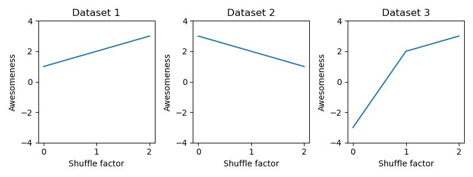
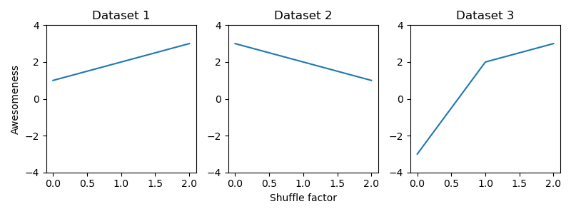

Exercises 1.5 - Plotting#
Exercise 1: Plot temperature anomaly values#
Let’s load some anomaly data:
# EXECUTE THIS CELL BUT DO NOT CHANGE IT
import numpy as np
# Load the full anomaly data set
data = np.loadtxt('temperature.csv', skiprows=1, delimiter=',')
years = [int(y) for y in data[:, 0]] # unpack the table and cast years to int
temperature_anomalies = list(data[:, 1]) # unpack the table
print(years[:10])
print(temperature_anomalies[:10])
[1880, 1881, 1882, 1883, 1884, 1885, 1886, 1887, 1888, 1889]
[-0.1, -0.17, -0.11, -0.17, -0.28, -0.26, -0.27, -0.22, -0.09, -0.23]
Plot the anomaly values similar to the figure below, with a black line connecting the individual values.
Roughly like so:

# your solution
Now copy the code for plotting above to the next cell and modify it to show:
a black line connecting individual values (as before)
a red dot if the anomaly value is positive
a horizontal red line at y=0
Roughly like so:

# your solution
Exercise 2: Plotting multiple datasets using for loops (IMPORTANT)#
You can combine for-loops and subplots to generate multi-panel plots.
You are given a variable, datasets, which is a list of list. Each list in datasets contains a dataset composed of 3 values.
Use a for loop to plot all three datasets in three subplots:
All subplots should have the same y-limits.
All subplots should have an y-axis label “Awesomeness” and an x-axis label “Shuffle factor”.
Each subplot should have a title “Dataset #” where “#” is substituted by the number of the dataset (1,2,3).
Roughly like so:

datasets = [[1,2,3], [3,2,1], [-3,2,3]]
# your solution here
This is nice, but there are too many redundant labels. Copy your code generating the figure from the cell above to the cell below and modify it in the following way:
Only the first subplot should have an y-axis label, “Awesomeness”.
Only the second (central) subplot should have an x-axis label “Shuffle factor”.
Roughly like so:

datasets = [[1,2,3], [3,2,1], [-3,2,3]]
# your solution here
Exercise 3: Plot the original and “downsampled” anomaly values#
Downsample by computing the avg. anomaly value in blocks of 10 years. Each point in the plot is the average over ten years of anomaly data. The first green point is the average over years 1880-1890, and is placed at 1885, the second point is the average over the years 1890-1900 and is placed at 1895 etc. The original anomaly values are plotted as a grey line.
Save the figure to an image file in the png-format using plt.savefig(FILENAME), where FILENAME is the name of the image file, for instance my_amazing_figure.png.
Important: For the figure to be saved in the png-format, the file’s name needs to end in .png. You need to use plt.savefig in the same cell in which you generated the plot. But before calling plt.show().
Roughly like so:

# your solution